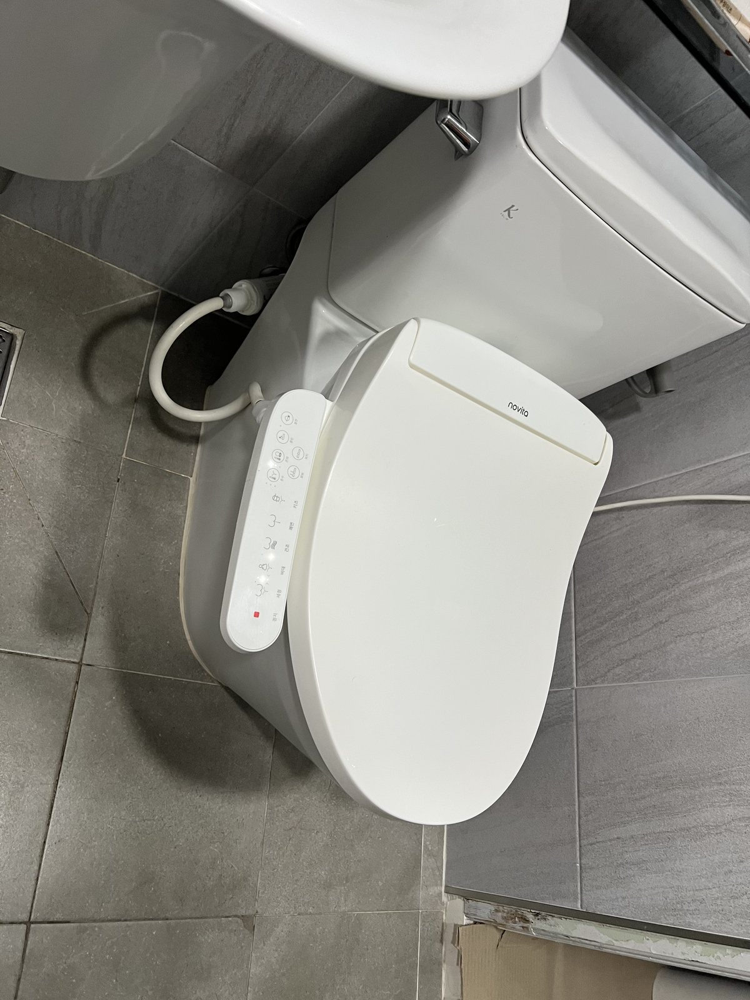
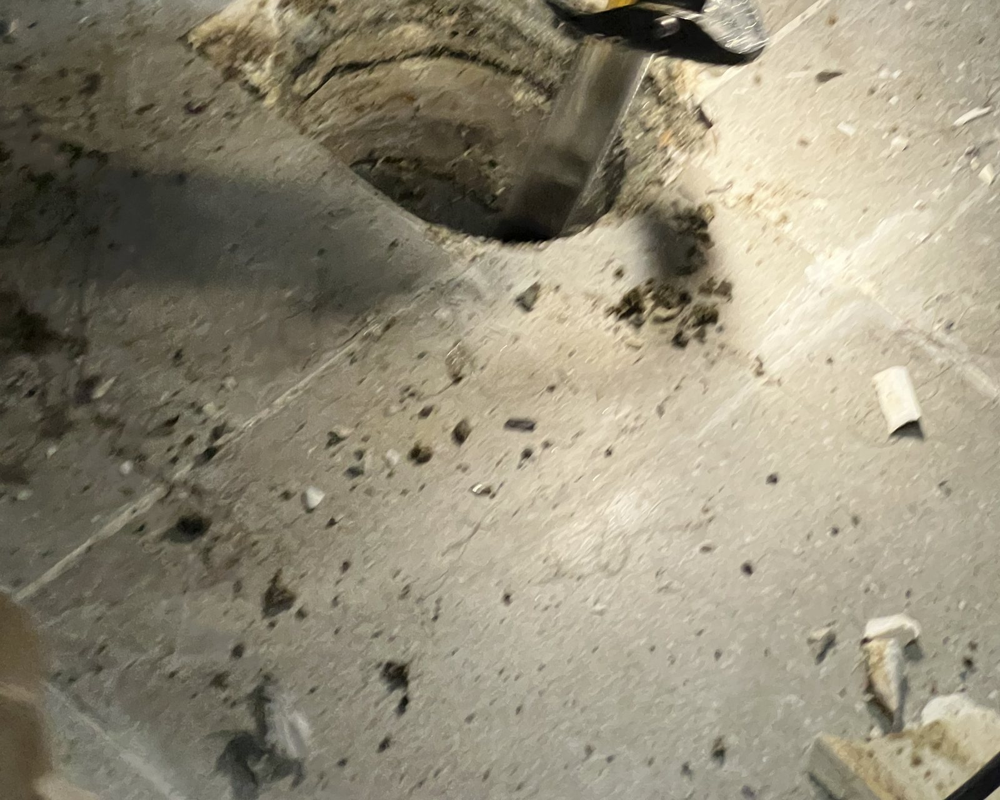
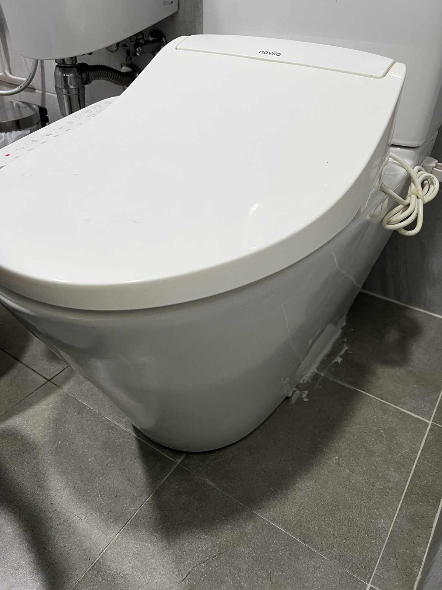

대전 신탄진 새여울아파트 양변기 배관 삽입｜변기를 떼고 배수구에 새 배관을 넣어 다시 설치

현장 작업 한눈에 보기
- 현장
- 신탄진 새여울아파트 · 욕실 양변기 배관
- 문제
- 양변기 아래 배수구 연결 부분
변기 밑 오래된 실링 자국 - 작업
- 양변기 떼어 내기
배수구 둘레 바닥 깨기
기존 배관 안에 새 배관 삽입(슬리브)
양변기 다시 설치 - 결과
- 다시 설치한 양변기 사진 확인
통수 결과·소요시간은 미기재
대전 대덕구 신탄진 새여울아파트 욕실 양변기 배관 삽입 작업입니다. 양변기를 떼어 내 바닥 배수구를 드러내고, 배수구 둘레를 깨어 기존 배관 안에 새 배관을 삽입(슬리브)한 뒤 변기를 다시 설치했습니다. 변기 정심과 양변기 교체 전에 볼 점도 함께 정리했습니다. 실제 사진 4장으로 소개합니다.
1. 작업 전 양변기
대전 대덕구 신탄진 새여울아파트 욕실에서 양변기 배관 삽입 작업을 했습니다. 2026년 11월 17일 낮에 찍은 사진을 순서대로 소개합니다.
작업 전 욕실 양변기 모습입니다. 겉으로는 변기와 바닥 타일만 보이지만, 변기 밑에는 바닥 배수구와 이어지는 연결 부분이 숨어 있습니다. 이번 작업은 변기를 새것으로 바꾸는 양변기 교체가 아니라, 쓰던 변기를 떼었다가 배관을 손본 뒤 같은 자리에 다시 앉히는 작업입니다.

2. 변기를 떼어 낸 배수구
양변기를 떼어 내자 바닥 배수구에 끼워져 있던 검은색 연결 부속과 둘레의 오래된 실링 자국이 드러났습니다. 변기 밑은 평소에는 볼 수 없는 자리라, 변기를 떼어 냈을 때 배수구 둘레 상태를 함께 봅니다.
검은색 부속은 변기와 바닥 배수구가 만나는 자리에 끼워져 있었습니다. 그 둘레 바닥에는 변기 밑동을 따라 발랐던 실링이 누렇게 변한 채 남아 있었습니다.
3. 배수구 둘레 바닥 깨기
새 배관을 넣을 자리를 만들기 위해 배수구 둘레 바닥을 장비로 깨어 냈습니다. 기존 배관 입구가 드러나야 그 안으로 새 배관을 넣을 수 있습니다. 욕실 바닥 전체를 걷어 내는 것이 아니라 배수구 둘레만 깨어 낸 것입니다.

4. 기존 배관 안에 새 배관 삽입
드러난 기존 배수관 안쪽에 새 배관을 끼워 넣는 삽입(슬리브) 작업을 했습니다. 바닥 속 배관을 통째로 들어내지 않고 기존 관 안쪽에 새 관을 넣어, 변기와 이어지는 입구를 새로 만드는 방식입니다.
이 단계는 사진을 남기지 못해 글로만 적습니다.
5. 양변기 다시 설치
배관 작업을 마친 뒤 양변기를 같은 자리에 다시 앉혔습니다. 떼어 냈던 양변기를 그대로 다시 설치한 모습입니다.

6. 알아 두면 좋은 점 — 변기 정심과 양변기 교체
아래는 이 현장에서 확인한 내용이 아니라, 변기 배관 작업을 알아보는 분들이 자주 궁금해하는 점을 일반적으로 정리한 것입니다. 실제 범위는 변기를 떼어 배수구 상태를 본 뒤에 정해집니다.
양변기 배출구와 바닥 배수관을 이어 주는 연결 부속을 현장에서는 흔히 '정심'이라고 부릅니다. 배수관 가운데가 변기 자리와 어긋나 있을 때는 중심을 옮겨 주는 '편심' 부속을 쓰기도 합니다. 변기 정심은 변기 밑에 가려 있어, 변기를 떼어 내야 상태를 볼 수 있습니다.
변기를 새것으로 바꿀 때는 벽에서 배수구 가운데까지의 거리를 미리 재 두면 그 자리에 맞는 변기를 고르기 쉽습니다. 변기를 떼어 냈을 때 배수구 둘레와 연결 부속 상태를 함께 확인하는 것이 일반적입니다.
변기 냄새나 변기 밑동의 물기는 연결 부속이 어긋났거나 밑동 둘레 마감이 벌어졌을 때 나타나는 경우가 있습니다. 다만 변기에 고여 있는 물(봉수)이 줄었거나 다른 배수구에서 냄새가 올라오는 경우도 있어, 겉모습만으로 단정하기는 어렵습니다.
비용은 변기를 다시 쓰는지 새로 바꾸는지, 바닥을 어디까지 여는지와 현장 상태에 따라 달라집니다. 변기 밑동과 욕실 바닥 사진과 함께 상담해 주시면 범위부터 안내합니다.
7. 확인한 범위와 상담 안내
이번 기록은 사진과 작업 메모로 확인되는 범위입니다. 통수 결과·작업 시간은 자료가 없어 적지 않았습니다.
양변기 밑동으로 물이 배어 나오거나, 물을 내릴 때 변기 둘레에서 냄새가 올라오거나, 아랫집 천장에 물 자국이 보이면 변기 밑동과 아랫집 천장을 함께 찍어 상담해 주세요.